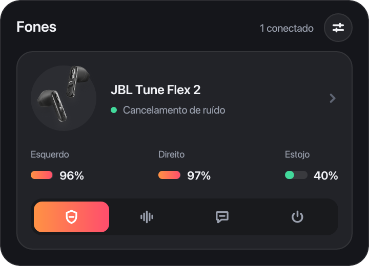
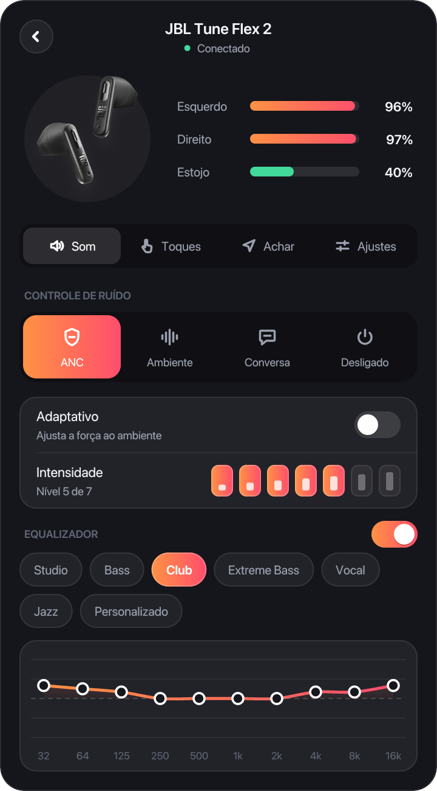
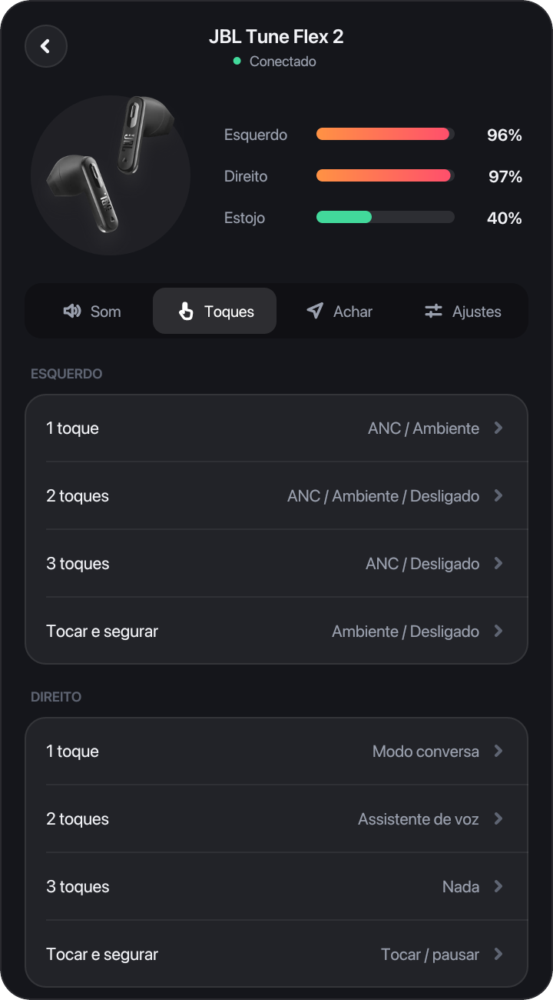
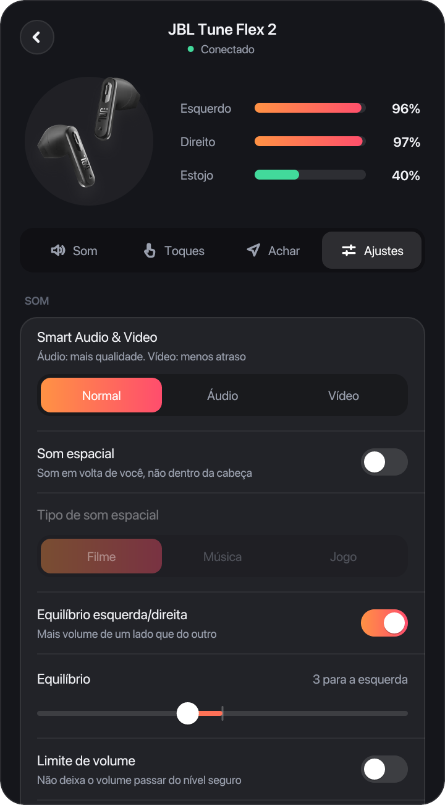

Unofficial app · open sourceApp não oficial · código aberto
The battery of each earbud and the case, noise cancelling, ambient sound, the equalizer, touch gestures and the headphones' settings, in the Mac menu bar or the Windows and Linux tray. Free, open source, and not made by JBL. A bateria de cada fone e do estojo, o cancelamento de ruído, o modo ambiente, o equalizador, os toques e os ajustes do fone, na barra de menus do Mac ou na bandeja do Windows e do Linux. Grátis, de código aberto e não feito pela JBL.
JBL's presets, as in the phone app:Os presets da JBL, como no app do celular:




Or install from the terminal, on macOS and Linux:Ou instale pelo terminal, no macOS e no Linux:
curl -fsSL https://edsuuu.github.io/OpenHeadphones/install.sh | sh
The app updates itself when a new version comes out.O app se atualiza sozinho quando sai uma versão nova.
On a Mac, from the .zip: the first time, open the app, then go to System Settings, Privacy & Security, Open Anyway. Not needed when installing from the terminal. No Mac, baixando o .zip: na primeira vez, abra o app e vá em Ajustes do Sistema, Privacidade e Segurança, Abrir Mesmo Assim. Instalando pelo terminal não precisa.
Tested end to end on the Tune Flex 2. The others use what JBL's own app knows about each model: noise modes, equalizer, touches and settings. Testado de ponta a ponta no Tune Flex 2. Os outros usam o que o próprio app da JBL sabe de cada modelo: modos de ruído, equalizador, toques e ajustes.